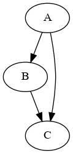
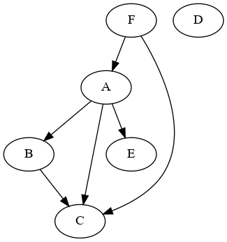

Chapter 7. Graphs
A graph consists of:
- a set of vertices (no vertex is repeated)
- a set of edges which are unordered pairs of distinct vertices
In this definition there is at most one edge between any pair of vertexes, and no "self-edges" from one vertex to itself.
A digraph consists of:
- a set of vertexes as for graphs
- a "multiset" of arcs which are ordered pairs of vertices
In a digraph, we can have repeated arcs and arcs from a vertex to itself.
The vertex at the end of an arc is called the tip.
Adjacency matrix
The adjacency matrix of a directed graph is defined on page 19 and used on page 20.
SGB data structure
The SGB (Stanford GraphBase) datastructure for directed graphs is defined on page 21.
SGB digraph
A digraph consists of:
- A vector of vertex nodes
- An "unstructured pool" of arch nodes
I choose to model the arches as dicts.
A vertex consists of:
- A name called NAME
- A pointer to the first ARC starting at that vertex called ARCS
When modeling arcs as Dicts, the "pointer" is the key.
An arc consists of:
- The tip of the arch (end vertex) caled TIP
- A pointer to the next arc starting at the same vertex as this one or missing if this is the only arch starting at this vertex, called NEXT
When modeling this as a Dict, the value of the Dict is an Int indexing the TIP in the vector of vertexes and a String which is the key of NEXT or Missing.
Data structures and methods
I'll like to be able to convert between representations like adjaceny matrix, SGB form and other representations.
struct AdjacencyMatrix
A::Matrix{Int}
endImplementing the SGB data structure using Dict for the arcs.
struct Arc
TIP::Int ## Index of end vertex
NEXT::Union{String,Missing} ## Key of next arct starting at same node
end
struct Vertex
NAME::String ## Name of vertex
ARCS::Union{String, Missing} ## Key of first arc starting at this vertex
end
struct Digraph
vertices::Vector{Vertex}
arcs::Dict{String,Arc}
endI use a "naive" graph data structure as a base case:
struct SimpleDigraph
name::String
nodes::Vector{Symbol}
arcs::Vector{Tuple{Symbol,Symbol}}
endHere is how a minimal example looks:
A --> B --> C
L-----------^
In "naive" notation (note the nice "dot" function I wrote to visualize the naive graphs using GraphViz):
g1 = SimpleDigraph("Simple", [:A, :B, :C], [(:A,:B), (:B,:C), (:A,:C)])
dot(g1,"/tmp/g1.png");In SGB notation:
g2 = Digraph(
[Vertex("A","AB"),
Vertex("B","BC"),
Vertex("C", missing),
],
Dict("AB"=>Arc(2,"AC"),
"AC"=>Arc(3,missing),
"BC"=>Arc(3,missing),
)
)Conversion
Digraph(g::SimpleDigraph)
It is surprisingly awkward to convert from the naive digraph to the Knuth digraph, but I currently have one that works for this example:
julia> Digraph(SimpleDigraph("Simple", [:A, :B, :C, :D], [(:A,:B), (:B,:C), (:A,:C)]))
Digraph(
Vertex[
Vertex("B", "BC"),
Vertex("A", "AB"),
Vertex("C", missing),
Vertex("D", missing)
],
Dict{String, Arc}(
"AC" => Arc(3, missing),
"BC" => Arc(3, missing),
"AB" => Arc(1, "AC")
)
)
SimpleDigraph(g::Digraph)
We can also convert the other way. It takes a bit before it is idempotent. We use the very nice StructEquality.jl package to make it easy to compare the data structures.
g1 = SimpleDigraph("Simple", [:A, :B, :C, :D, :E, :F], [(:A,:B), (:B,:C), (:A,:C), (:A, :E), (:F, :A), (:F, :C)])
g2 = Digraph(g1)
g3 = SimpleDigraph(g2)
g4 = Digraph(g3)
g5 = SimpleDigraph(g4)
g6 = Digraph(g5)
g7 = SimpleDigraph(g6)
@test g7 == g5
@test g6 == g4Even when the data structures look different, GraphViz renders them exactly the same.

TODO
- [X] Digraph(g::SimpleDigraph)
- [x] SimpleDigraph(Digraph)
- [ ] AdjacencyMatrix(x::Digraph)
- [ ] Digraph(x::AdjacencyMatrix)
- [ ] Algorith B (bipartate testing) p22 ff
Before the graphs there are some interesting claims about latin squares that could be nice to check.